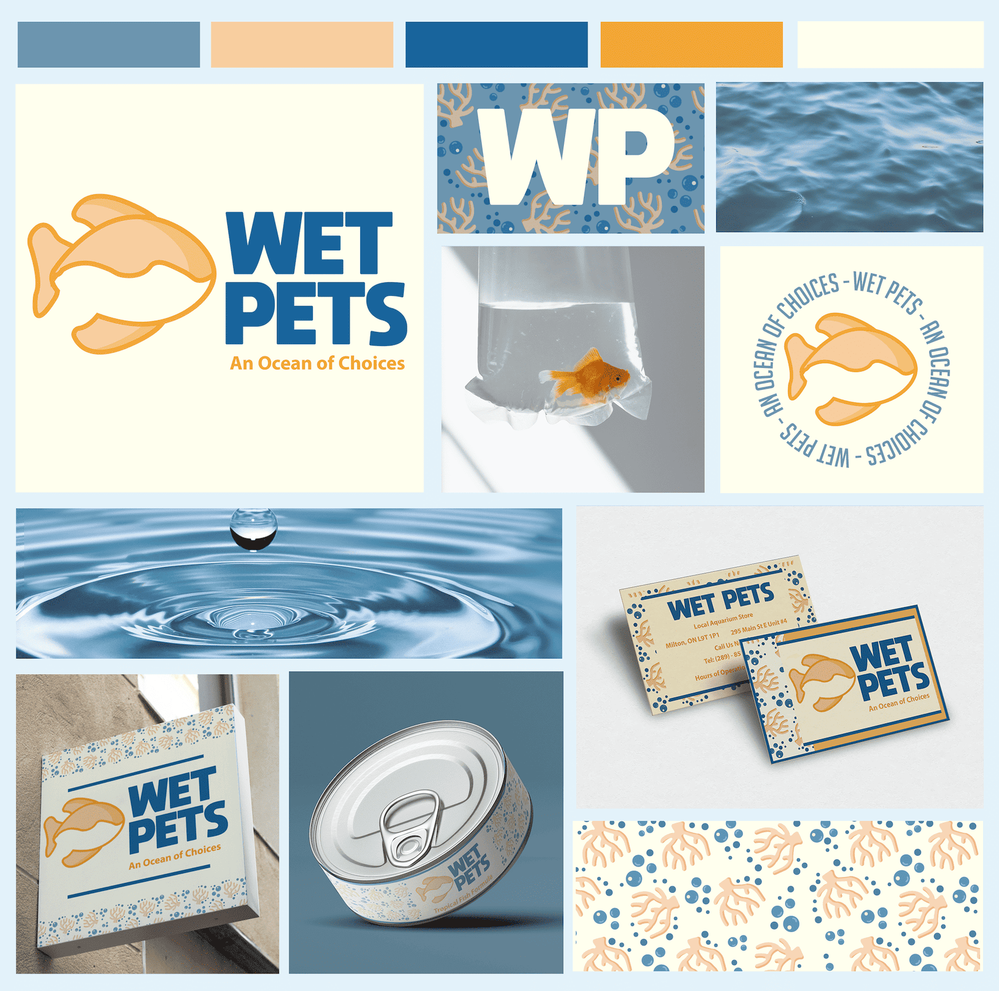

ILLUST
RATOR
This project involves the redesign of a local aquarium located
in Milton, Ontario, where I’ve focused on modernizing its brand
identity. Throughout this initiative, I have worked to create a
new logo, typeface, packaging, and business cards, each designed
to convey a fresh and cohesive visual aesthetic. The new logo
was developed in multiple formats: a word mark, a pictorial
logo, and a combination of both. I proposed a refreshed colour
palette that moves away from the previous neon blues and
yellows, opting for a more contemporary look. Using Adobe
Illustrator, I also created a custom coral and bubble pattern
prominently featured throughout the rebrand. This pattern
adds an engaging, thematic element and is applied consistently
across the packaging, business cards, and signage to unify the
brand’s image.


This project was completed in my Grade 12 media design class.
The goal was to create a digital resume that showcased our
design skills while offering a quick glimpse into our interests
and identities as designers. Although the project was primarily
for fun, it taught me valuable skills in Illustrator, such as
creating icons, working with textures, and designing avatars.
Through this project, I also learned the importance of visual
storytelling and consistency in design, ensuring that each
element on the resume reflected my personal style and professional
brand. The process involved researching design trends,
exploring different layout options, and experimenting with
colour schemes that aligned with my aesthetic preferences. I
had to balance creativity with functionality, making sure the resume
was visually appealing yet easy to navigate. This project also
gave me the opportunity to reflect on my growth as a designer,
as I incorporated feedback from my peers and instructor to
improve my work. Ultimately, the digital resume became not just
a representation of my design skills but a statement of who
I was as a creative professional. It was a fun and meaningful
way to put my design knowledge to the test while
simultaneously building something that could be
shared as part of my portfolio.
This project was completed during the winter semester of
my first year at university in 2024. The goal was to create
a magazine that collectively showcased the previous projects
completed throughout GBDA 101. These projects included
logo design, diptych posters, and an emotional object.
The magazine highlights my skills in design and Illustrator,
presenting a cohesive and visually engaging layout.
This project was completed during the winter semester of my
first year at university in 2024. The goal was to create a
magazine that collectively showcased the previous projects
completed throughout GBDA 101. These projects included logo
design,diptych posters, and an emotional object. Through this
project,I gained valuable experience in balancing creativity with
brand consistency.
↑